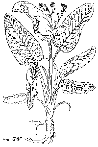

Horseradish is one of my favorite flavors; it is also an herb, a condiment, a stimulant, and an excellent source of vitamin C (23 mg per ounce). The enzyme peroxidase is extracted from the roots by the pharmaceutical industry for use by diabetics to test their blood sugar levels. Peroxidase is also used in neurobiological research.

Cultivation - Once you have secured a piece of root, either from a gardening friend or from the local market, select a spot where the soil is at least 2 foot deep, and where you are sure there will be no reason to change your mind. Once planted, your horseradish plant will be there forever; in fact, if you are not careful with the little rootlets, side roots, and the crowns when digging, you will unwittingly expand your horseradish garden in every direction. The fertilizer I prefer is 6-24-24. It is important to limit the amount of nitrogen so that growing energy is directed into the root. Organic fertilizers like fish emulsion and liquid kelp are a better choice when available. The plant likes evenly moist soil and full sun, but will tolerate part shade. Soil Ph slightly on the acid side is preferred, but it will do well from a Ph of 5.0 to 7.5For large straight roots, push back the soil from around the crown when the leaves are about 12 inches tall. Smaller roots coming out the side of the main root should be cut. Check the crown for the number of sprouts forming leaves. Cut off all those emanating from the sides of the crown so that the number of sprouts is limited to 2 or 3. Do this again in about 4 weeks. I have never bothered with the above advice, but then, I only havest roots every other year anyway. Replant all the pieces you cut off if you want to expand your horseradish bed. If that is not your intention, be sure to discard them in a manner which insures that you will not be starting new plants on your own property.
Harvest - Gardeners in zones 4 through 6 can grow a decent root in reasonable time. Cochlearia armoracia, currently known as Armoracia rusticana, prefers cold winters and deep fertile soil. A small piece of root planted in the spring can produce a usable root in the fall, but only under ideal growing conditions. Most gardeners harvest horseradish roots after 12 to 18 months. Roots should be dug only when the plant is not actively growing, i.e., early in the Spring as the crown is just starting to show a bit of green growth or in the fall after the second hard frost. I prefer to dig the roots in November while the soil is dry but not yet frozen. I examine all of the crowns for suitable diameter, and flag those having diameters of not less than 1 inch. When finished, I select the 10 to 12 largest roots for digging. After digging them out, I cut off the crown and any side roots, and replant them in the same spot immediately. Add some compost to the bed, and consider it put away for the winter.
Processing - Scrub the roots, then pare off the outer coating on the root with a potato peeler or a scraper. Cut the root into small chunks (1/2" x 3/4"). Prick out small dark spots and veins. Cut around hollow spaces. The roots are easily ground in a food processor. Before grinding, open a window, or move the operation out of doors. If the sight of a slice of onion brings tears to your eyes, choose the outdoors for grinding. Before you begin, prepare a mixture of one cup of water and one cup of 5% distilled white vinegar. Some recipes call for 100% vinegar, but this is quite unnecessary. The sole purpose of adding some vinegar is to stop enzymatic reactions which control how hot the end result will be. It is not the quantity of vinegar which is important in that regard, but the timing of the application, as you shall see in a later paragraph.
Begin grinding as many pieces of root as the food processor will hold without packing. After a while, the ground up root will collect around the outside walls of the grinder. At this point, pour some of the water/vinegar mixture through the hole in the top of the grinder, until grinding action begins anew. A course grind produces a mild product. Grinding until the root is finer and finer makes the finished product hotter, but also smoother and easier to use. A really fine grind requires more liquid than you will want to put into your storage jars, and will need to poured off through a strainer. Excess liquid should be reused for additional grinding of the next batch. Continue as before, making up additional batches of the water/vinegar mixture as needed. Pack the ground horseradish into small jars, preferably 6 ounce to 8 ounce capacity. They will keep in the refrigerator for four to six weeks. If you have prepared more than you can use during that period, simply put the excess jars in the freezer where they will keep indefinitely. The method described above has been used by me for many years. It is easy, quick, and reliable. The University of Illinois, Cooperative Extension Service recommends an alternate procedure, as follows:
"Process no more than half a container load at a time. Add a small amount of cold water and crushed ice. Start with enough cold water to completely cover the blades of the grinder. Add several crushed ice cubes. Put the cover on the grinder before turning it on. If necessary, add more water or crushed ice to complete the grinding. When the mixture reaches the desired consistency, add white vinegar. Use 2 to 3 tablespoons of white vinegar and 1/2 teaspoon of salt for each cup of grated horseradish. (One tablespoon of sugar may be substituted for the salt.) If desired, lemon juice may be substituted for the vinegar to give it a slightly different flavor.
The time at which you add the vinegar is important. Vinegar stops the enzymatic action in the ground product and stabilizes the degree of hotness. If you prefer horseradish that is not too hot, add vinegar immediately. If you like it as hot as can be, wait three minutes before adding the vinegar."
If you choose my method of adding a water/vinegar mixture, you should consider trying a 10%/90% mixture for one portion, and the 50%/50% mixture that I use, and a 90%/10% mixture for another portion, ultimately selecting the mixture that best suits your taste. Remember that the quantity of vinegar is of little importance, except to your taste. There must be a thousand ways to use your ground horseradish. I was going to include several popular recipes at this point, but as I read through them, I realized that I never use horseradish in those manners, and could hardly recommend them to you. I do suggest that you become familiar with the actual flavor because it is quite pleasant. There are two easy ways to sample the pure flavor of horseradish. I like to stir one teaspoon of horseradish into one tablespoon of vanilla ice milk or ice cream. The flavor is greatly enhanced when the ice milk cancels out the heat. Finally, a teaspoon of horseradish stirred into any meat gravy, any stew, any soup, any liquid or semi-liquid cooked dish adds a dash of interesting flavor which is quite pleasant for people who ordinarily would not tolerate a "hot" dish. When making sandwiches, I suggest using real mayonnaise instead of Miracle Whip for better horseradish flavor.
In one way or another, I think that I must enjoy a teaspoon of this particular flavor every day of the year. Two more interesting facts: A factory which does nothing but grind horseradish roots is just 2 miles from my house despite the fact that 2/3rds of the nations supply of roots are grown in Southern Illinois while I live in NE Illinois. Second, we have to purchase almost 70% of our annual requirement, because I can't grow them fast enough, despite my having about 25 plants going at the same time.
Well, I changed my mind about recipes. The following recipe for Cranberry sauce was donated by Barfy Dog's Mom. My tests indicate it to be a good showcase for horseradish flavor, and an excellent accompaniment to slices of ham or turkey, on salads, and even in hamburger sandwiches.
2 cups cranberries, 1 small onion, ½ cup sugar, ¾ cup sour cream, 2 to 4 Tbs horseradish.
Grind cranberries and onion in food processor until mixture is finely chopped. Combine sugar, sour cream and horseradish in bowl with fitted lid. Add cranberry-onion mixture and mix well. Secure fitted lid on bowl. Freeze sauce several hours or overnight. Thaw 3 to 5 hours in refrigerator just before it is needed.
2 Tbs of horseradish yields a very mild flavored sauce. 3 Tbs is about right. 4 Tbs could be risky for virgin taste buds.
Enjoy! It mades a pretty good sorbet, as well, if you sample it half-thawed.
Or, continue reading the commercial bulletin on horseradish culture published by the University of California (Davis)
Horseradish is grown on only about 3000 acres in the U.S. Most of it comes from California, New Jersey, Virginia, Illinois and Wisconsin. An explanation of how the name came into being was adapted from "Illinois Horseradish...A Natural Condiment", University of Illinois Circular 1084:
The name "horseradish" is thought to have come from an English adaptation of its German name. Germans called the plant "meerrettich" (meaning "sea radish") because it grew wild in European coastal areas. The German word meer (sea) sounds like "mare" in English. Perhaps "mareradish" became "horseradish". The word "horseradish" first appeared in print in 1597 in John Gerarde's English herbal on medicinal plants.
A totally different plant (Wasabi japonica) is used to produce a product called Japanese Horseradish or wasabi. It is propagated from crown sprouts, rhizomes, or less commonly from tissue cultured plants and from seed. It is prized by Orientals as a flavoring for a number of foods. Although uniquely different in flavor from horseradish, it also has many similar flavor characteristics.
Wasabi is an aquatic plant grown in cool, continuously running streams, requiring much hand labor. There have been recent efforts to grow this plant in rice paddies and in hydroponic greenhouses for the harvest of leaf petioles for the processing market. A new variety called Wasabi Tainung No. 1, widely adapted and reportedly tolerant to a number of important diseases, was developed at the Ali-san Chiayi Experiment Station and released in 1990 to growers in Taiwan by the Taiwan Agricultural Research Institute.
Because of the difficulty in producing wasabi, and the demand for it, a substitute has been developed using American horseradish to which synthetic flavor compounds and the appropriate green food color have been added. Both wasabi and the substitute product are marketed as a canned dry powder or frozen or fresh paste. In Japan, the fleshy plant stem or leaf petioles of wasabi are also sold fresh in produce markets.
The following describes only production practices for horseradish common in the U.S.
VARIETIES
Horseradish is divided into two general types, "common" and "Bohemian". Maliner Kren is a "Bohemian" type from which many local selections have been made. Improved Bohemian and Bohemian form the basis of the current industry. "Common" types have broad crinkled leaves and are considered to have superior quality, while "Bohemian" types have narrow smooth leaves, somewhat lower quality, but better disease resistance. Obtaining adequate quantities of quality planting stock of the right variety is a major concern in horseradish production!
PLANTING STOCK
Use planting stock from root cuttings that have been trimmed from the crop's main roots at harvest. Use root pieces with a diameter of 3/8 to 3/4 inches in diameter. Cut root pieces 8-12 inches long leaving a square cut at the top, and tapered cut at the bottom, so those planting will orient the root properly in the ground. Space rows 30-36 inches apart with in-row spacing of 15-24 inches. About 8700-9700 root cuttings will be required per acre.
Horseradish plants may be produced through tissue culture. Although more expensive, rapid increase of the desired planting material via tissue culture may be possible by contracting with plant propagators having tissue culture capabilities.
SOIL
Use deep loam or sandy loam soil types that have good drainage. It is desirable to have a fair amount of organic matter in the soil as well. Shallow soils over hard subsoils are not suited for good production.
FERTILIZER
The following are general recommendations. It is advisable to have a soil test done on each field to be planted. Fields should be limed to a pH of 6.0-6.5.
Manure may be plowed under at 12-20 tons/acre in the fall.
Nitrogen: 100-200 (N) lb/acre depending on soil type.
Phosphorus: 100-150 (P2O5) lb/acre
Potassium: 100-150 (K2O) lb/acre
Boron: 2-3 (B) lb/acre
Sulfur: 30-50 (S) lb/acre
PLANTING
The root cuttings should be about l/2 to 3/4 inches in diameter and from 8-14 inches long. These should have been cut with a slanting cut on the lower end and a square cut at the top in order to determine the proper root placement in the soil. Plant roots as early in the spring as ground can be prepared, usually in early April. About a year is required to produce a crop. Since fields may be harvested in fall or spring, the spring harvest usually provides planting stock for planting. Under conditions where planting stock is available, and roots have time to get established, fall planting may also be feasible.
Roots may be placed in the soil either by transplanter or by hand. Transplanters might need some modification to work most efficiently. The transplanting operation should leave the root at an angle of about 45 degrees in the soil. This is very important for vigorous establishment and growth.
For hand planting, furrows should be made that are 3-5 inches deep. Roots are then dropped into the furrow making sure that all the tops are pointing in one direction, and the roots at a 45 degree angle. Then push some soil over the lower end of the root and firm it with the foot to hold it in place. A cultivator can be used to finish filling in the trench and covering the roots.
Some growers set the root so that several inches remain above the level soil surface. Then the roots are covered by forming ridges in the rows with disk hillers. This ridging also benefits the harvesting operation.
Whether roots are laid in trenches or placed at an angle in the soil, it would be desirable to plant two or four rows together in the same direction. This allows cultivation of the rows in the direction that the roots are set rather than against them.
IRRIGATION
Although irrigation early in the growing season is not required, greater yields will be obtained if horseradish is irrigated during dry periods in August and September. The benefits of irrigation will be greater on lighter soils where crops are more subject to moisture stress.
Soil type does not affect the amount of total water needed, but does dictate frequency of water application. Lighter soils need more frequent water applications, but less water applied per application.
HARVESTING, HANDLING, AND STORAGE
Approximate yields range from 7,000 to 8,000 lb/A. Horseradish makes its greatest growth in late summer and early fall. Harvest is usually delayed till October or early November for best yield. Fields may be harvested in fall or spring.
Harvesting is usually not started until a frost has killed off the tops. If harvesting is done before that, tops should be removed with a rotary cutter as close to the soil surface as possible. Allow several days between leaf removal and harvest. If bad weather prevents fall harvest, the roots can be harvested the following spring.
Harvest is usually done by using a modified 1 or 2 row potato harvester. It is important to set the harvester deep to allow maximum recovery of roots and also to reduce the number of volunteer plants that grow as weeds in subsequent years.
Before the roots are sent to the processor, small roots must be removed as the planting stock for the next season. The small roots selected to be stripped from the large roots should be about 0.5 in. in diameter and 10-14 inches long, and free from injury. The bottom of each root should be given a slanting cut and the top a straight cut to indicate root position at planting. Store the roots and planting stock at low temperatures and high humidity with good air circulation.
STORAGE (quoted from USDA Ag. Handbook #66):
Horseradish should keep satisfactorily for up to 10-12 months at 30 to 32 F, relative humidity of 90-95%. A high relative humidity is essential for minimum deterioration during storage. Perforated plastic bags or bin liners can aid in maintaining the high humidity. Roots should be kept in the dark because they can become green when exposed to light. Roots dug when the plant is actively growing do not keep as well as those conditioned by cold weather before they are dug. Frequent inspection is storage is advisable. Horseradish can also be stored over winter in cool cellars or in outdoor pits or trenches.
The requirements for marketing the roots are: A well-flavored root, reasonably straight, without side shoots, and no mechanical or decay damage. The roots should be at least 8 in. long with a diameter of not less than 0.75 in.
PACKAGING
Horseradish is commonly packaged in 60-lb sacks, 50-lb sacks, 5-lb cello packages, or delivered in bulk for processing.
PEST CONTROL FOR HORSERADISH
THE PESTICIDES LISTED BELOW, TAKEN FROM THE PACIFIC NORTHWEST PEST CONTROL HANDBOOKS, ARE FOR INFORMATION ONLY, AND ARE REVISED ONLY ANNUALLY. BECAUSE OF CONSTANTLY CHANGING LABELS, LAWS, AND REGULATIONS, OREGON STATE UNIVERSITY CAN ASSUME NO LIABILITY FOR THE CONSEQUENCES OF USE OF CHEMICALS SUGGESTED HERE. IN ALL CASES, READ AND FOLLOW THE DIRECTIONS AND PRECAUTIONARY STATEMENTS ON THE SPECIFIC PESTICIDE PRODUCT LABEL.
USE PESTICIDES SAFELY!
Wear protective clothing and safety devices as recommended on the label. Bathe or shower after each use.
Read the pesticide label--even if you've used the pesticide before. Follow closely the instructions on the label (and any other directions you have).
Be cautious when you apply pesticides. Know your legal responsibility as a pesticide applicator. You may be liable for injury or damage resulting from pesticide use.
WEED CONTROL
The Pacific Northwest Weed Control Handbook has no control entries for this crop. Herbicides registered, but not evaluated in the Pacific Northwest, include Dacthal and Roundup. Consult labels for rates, restrictions, and weeds controlled.
Cultivate as often as necessary when weeds are small. Proper cultivation, field selection and rotations can reduce or eliminate the need for chemical weed control.
INSECT CONTROL
Proper rotations and field selection can minimize problems with insects.
THE PESTICIDES LISTED BELOW ARE TAKEN FROM THE PACIFIC NORTHWEST INSECT CONTROL HANDBOOK, AND ARE FOR INFORMATION ONLY. CONSULT PRODUCT LABELS FOR CURRENTLY LEGAL REGISTRATIONS, RATES AND COMPLETE INSTRUCTIONS.
Insect and Description Control, Active Ingredient/Acre
----------------------------------------------------------------------
Aphids, including malathion - 1.25
Cabbage aphid
Brevicoryne brassicae Lannate - 0.45 lb
Turnip aphid
Hyadaphis pseudobrassicae Pyrellin - 1 to 2 pt
Both species closely resemble M-Pede, 1-2% solution, each other. Gray, mealy, plant see label for rate/acre lice that form colonies on foliage.
------------------------------------------------------------------------
Cutworms Sevin (bait only) - 1 to 2 lb
(Several species)
Mattch - see label
Dark-colored moth larvae that damage roots or leaves.
------------------------------------------------------------------------
Diamondback moth permethrin - 0.2 lb
Plutella maculipennis
Mattch - see label
Larvae are pale, yellowish-green in color with finely scattered erect, MVP - 2 to 4 qt black hairs. Eat small holes in leaves.
------------------------------------------------------------------------
Imported cabbage worm carbaryl - 1 to 2 lb
Pieris rapae
Pyrellin - 1 to 2 pt
Caterpillar is soft velvety-green, with a faint yellow stripe on back. Mattch - see label MVP - 2 to 4 qt
------------------------------------------------------------------------
Cabbage flea beetle carbaryl - 1 lb
Phyllotreta cruciferae
permethrin - 0.1 to 0.2 lb
Small, shiny, steel-blue jumping beetle. Attacks young foliage and may require control measures
------------------------------------------------------------------------
Wireworms Telone II
Limonius spp.
Telone C-17
Brown, jointed larvae of click beetles. Kill young plants; bore holes in roots of older ones.
________________________________________________________________________
________________________________________________________________________
DISEASE CONTROL
Proper rotations, field selection, sanitation, spacings, fertilizer and irrigation practices can reduce the risk of many diseases. Fields can be tested for presence of harmful nematodes. Using seed from reputable seed sources reduces risk from seed-borne diseases.
----------------------------------------------------------------------------------------
HORSERADISH -- VERTICILLIUM
Cause: Verticillium sp., a fungus that can survive for long periods of time as microsclerotia.
Symptoms: Unilateral wilting and death of above ground portions of the plant. Sometimes wilt is proceeded or accompanied by interveinal yellowing of the lower leaves of the plant and stunting of the plant. The vascular tissue of the root becomes brown or black in color, reducing the grade of the product when harvested.
Control: Long rotation is the only control available.
---------------------------------------------------------------------------
HORESRADISH -- WHITE RUST
Cause: Albugo candida, a fungus. Horseradish and radish are the principal economic hosts. The disease is known throughout the world where crucifers are grown. Many weeds are included in the host range. The fungus overwinters as oospores or mycelium in infected plant parts.
Symptoms: The fungus may attack any part of the plant: stem, leaves, or flowers. Systemic infections result in enlarged and distorted infected parts. Infected flower parts often lose their normal pigmentation and produce chlorophyll. The raised, white, spore-containing pustules, isolated or grouped together to form large patches, are the diagnostic symptom. The pustules have a powdery consistency and are produced on the leaves or stems.
The fungus overwinters as oospores in plant debris or as mycelium in perennial plants. Leaf infection occurs readily at temperatures of 68 F when free water is present. Long periods of free water inhibit spore germination since spores require drying before germination occurs. Secondary infections occur by conidia that are windborne. Invasion of the plant is by germ tubes through stomata.
Control:
1. Destruction of horseradish debris aids in control.
2. Plant only roots from uninfested fields.